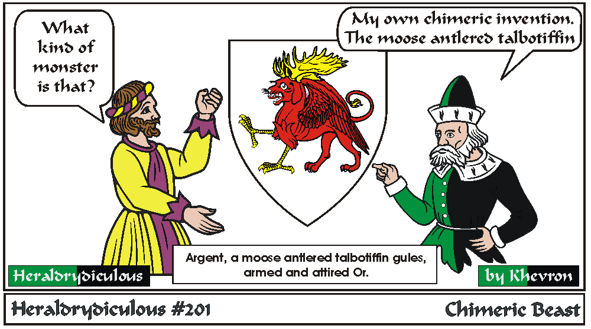
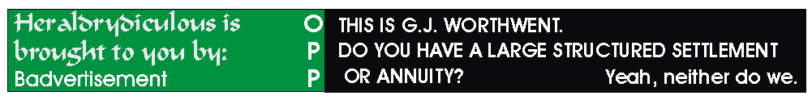

Should probably be blazoned: Argent, a winged talbot gules with the forelegs of an eagle and moose attires Or.
Chimeric Beasts are 'hybrid' monsters built with parts exchanged with other monsters or beasts or even birds, fish or people. There are iconic Chimeric
monsters (aka the Chimera - a lion with a snake tail and extra head of a goat, which breathes fire), the Griffin, Ypotril, Hippogriff, Centaurs, etc. There's even a charge the front half of a lion and the hind of a ship!
Or you can make up your own. They are found in the OandA under Monster-Other or Monster Compound.
Ex: A monster composed of the forequarters of a goose and the hindquarters of a pig statant, winged - a "Pigoosus". Either way, they are quite rare in period armory.
e-mail: